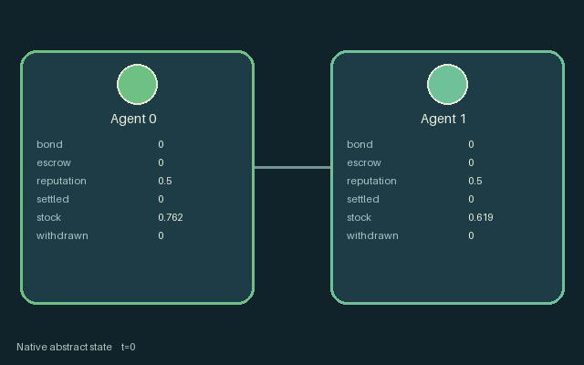

GI005 · 可没收保证金托管

生产、消费、挂出托管货物并缴纳保证金；定期匹配交易，撤回会没收保证金并降低影响后续结算的信誉。
身份与原始接口
共有 2 个独立可操作角色；每人 5 个离散动作；每人的原生观察宽度 16；原始时限 32 步。声明的单步奖励范围为 -1.0 至 1.0。观察制度标识：source_defined。
源码校验值： 35115eb973c0ade1933abd5da3654e04502b5d7d51d83d3f3317a5744f510fc7
目标、奖励、人口、地图和时限均保留原值。动图不表示已完成任务。
目标与玩法
生产、消费、挂出托管货物并缴纳保证金；定期匹配交易，撤回会没收保证金并降低影响后续结算的信誉。
围绕上述目标安排每位角色的合法动作，以实际资源、位置、工序和信息为约束。提交的是同一步的联合行动，不是把角色按界面顺序逐个推进。动作编号与按钮名保持游戏中的英文，见下方逐项操作表。
自然完成、失败和截断由原始内核决定；最长运行 32 步，不能把到达时限当作成功。先看结束标记，再检查目标、损失和实际回报。空间游戏保留原始吸收终止；抽象游戏保留历史终止行为。
这款游戏体现的理念
信息、探测与通信: 谁知道事实、何时测得、是否传到对方是不同状态。检验记忆或通信作用时，各对照必须遵守相同角色信息权限。
承诺、交换与治理: 承诺会占用时间、资金、通行或材料。区分口头约定、已生效承诺与最终交付，也记录取消和到期。
联合运输与共享通行: 位置、载物几何、占位与持久通行条件约束下一步谁能成功。区分实体交接、共用控制和同步合力，不能用合作标签替代机制。
这些是规则结构支持的研究问题，不是已观察到的学习效果。
实际游玩操作指南
crucibles play --game gi005保持终端运行并打开打印的网址，选择本款、设种子，点击 Create session 建局。游戏本体始终为英文。
用 Assign / take over 把角色编号或范围交给主持人，或用 Assign all roles 接管全员。用 Create player invitation 邀请另一参与者，再分配不重叠角色；全部原角色均可操作。
为每个接管角色选合法指令，点击 Queue 排队。方向键或字母方向键在本款存在对应动作时，为当前角色视角排队；空格或 Advance one joint step 同时推进全员。无方向动作时使用下拉框。
未排队角色由标注的未经训练、合法动作均匀采样策略操作。下一步前可接管或释放，不重置世界。完整状态调试视角暴露特权信息并永久记录；角色视角保留权限。关闭会话可保留日志，服务重启不恢复会话。
全部动作操作表
编号和英文按钮逐项对应清单。中文提示说明操作类别；具体目标、阈值、阶段和顺序按本款规则与清单执行。合法不保证有产出，前提不足可能没有效果。
0·Produce stock— 执行所列生产、施工或设备操作；互补工序、热度、工具和材料前提仍须满足。
1·Offer escrow— 提交所列交易、权利或承诺操作；注意对方同意、余额、有效期与既有承诺。
2·Pledge bond— 提交所列交易、权利或承诺操作；注意对方同意、余额、有效期与既有承诺。
3·Withdraw escrow and forfeit bond— 撤回、取消或超时处理已有安排；已锁定成本、保证金或物品按本款规则处理。
4·Consume stock— 进行所列采收、交付或兑现；地点、对象和加工状态必须匹配，不能假定按钮必然成功。
角色与能力标识
以下保留英文游戏能力标识，便于在界面找到角色，并非可任意互换的皮肤。协调交接前先查看对应角色的合法动作。
agent_0·Original legacy agent; see mechanism and source
agent_1·Original legacy agent; see mechanism and source
信息与观察权限
每个行动者仅接收自己的原生观察行；公共状态、私人字段和延迟消息须分别处理，不能从全图推断角色已经知道。
动图是完整状态调试视角，可能揭示隐藏实体或私人状态。策略输入使用 obs[agent]，不能直接使用图片、完整状态树或伙伴私人观察。字段切片和可见性见原始清单。
强化学习接入
import jax
from crucibles_jaxmarl import make
env = make("gi005")
key = jax.random.PRNGKey(0)
key, rk, ak, sk = jax.random.split(key, 4)
obs, state = jax.jit(env.reset)(rk)
actions = env.sample_actions(ak, state)
obs, state, rewards, dones, info = jax.jit(env.step_env)(sk, state, actions)
done = dones["__all__"]观察为宽度 16 的浮点向量；动作是单个整型编号；每个合法掩码有 5 项。每次转移提供全部 2 人动作。掩码采样只是工程参照，不是训练后的学习器。
step_env 保留终止数据，不自动重置；step 提供外层自动重置，在信息字典保留原始终止状态与观察。用 dones["__all__"] 划分回合，分析时区分完成、失败和时限。
对同身份同形状编译或批处理，重置、策略和转移使用独立密钥。不同形状明确分组，不能缩小人口或时限。主机渲染留在训练图外。
训练问题与公平评测
拟合前按本款目标定义有效完成指标。保留原奖励，另报真实交付或服务、损失、资源状态、未决局和逐角色回报。动画不是奖励信号。
谁知道事实、何时测得、是否传到对方是不同状态。检验记忆或通信作用时，各对照必须遵守相同角色信息权限。
承诺会占用时间、资金、通行或材料。区分口头约定、已生效承诺与最终交付，也记录取消和到期。
位置、载物几何、占位与持久通行条件约束下一步谁能成功。区分实体交接、共用控制和同步合力，不能用合作标签替代机制。
比较记忆、通信或集中价值网络时须匹配策略信息，声明价值网络权限并保持角色输入过滤。伙伴或对手分布、掩码、算力和检查点选择规则须匹配，最终测试不能参与拟合或选择。
独立训练运行或来源配对块才是推断单位，同一策略的多局不是独立训练复现。保存哈希、种子、版本、设备、耗时和成本。负向、零、失败和无法判定都有效，不提供训练检查点或承诺分数。
分类与判断依据
可重叠编辑标签是阅读辅助，不证明新颖性、难度、策略等价性或学习效果。
- 信息、探测与通信
- 依据字段：
mechanism.md。该字段规则支持此阅读标签，可在下方原始资料逐字核对。
- 承诺、交换与治理
- 依据字段：
manifest.actions.1。该字段规则支持此阅读标签，可在下方原始资料逐字核对。
- 依据字段：
manifest.actions.2。该字段规则支持此阅读标签，可在下方原始资料逐字核对。
- 依据字段：
manifest.actions.3。该字段规则支持此阅读标签，可在下方原始资料逐字核对。
- 联合运输与共享通行
- 依据字段：
mechanism.md。该字段规则支持此阅读标签，可在下方原始资料逐字核对。
来源、回执与预览边界
纯英文无说明面板的动图把保存的未训练合法动作交给原内核重放，最多抽取二十五个真实端点，含初始与终止，无虚构插值。它是完整状态调试，不是角色观察。
工程通过不证明学习。非零浮点差异保留并记为未定，不增加容差。人类成绩尚未核验。